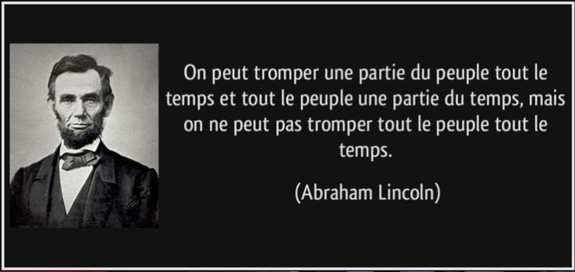
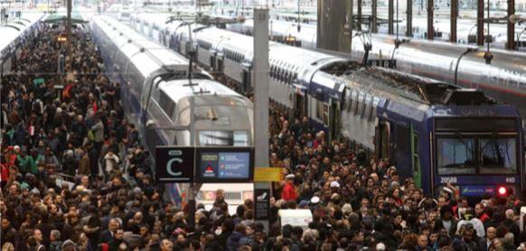

Pierre Clostermann, Sacha Tolstoï et Guy Réal del SarteDans une conversation avec le regretté Pierre Clostermann, passionné, entre autres, par la pêche aux gros poissons, celui-ci m’avait expliqué comment le pêcheur sportif s’y prenait pour arriver à mettre à bord du bateau des poissons de plusieurs centaines de kilos. Il ne disposait que de sa canne à pêche et d’un fil de nylon dont la résistance à rupture ne dépassait pas une petite fraction du poids de l’animal. Tout l’art du pêcheur était de sentir la limite juste avant le point de rupture afin de laisser le poisson reprendre du fil.
Ne pouvant s’opposer à sa force brutale contre laquelle il aurait perdu, le pêcheur devait fatiguer la bête jusqu’au moment où celle-ci ne pourrait plus lutter. Ceci pouvait naturellement prendre un certain temps…
CONTOURNER LA DÉMOCRATIE
« Où veut-il en venir, avec ses histoires de pêche » me direz-vous ? – Patience ! J’y arrive.
Après avoir connu une année électorale et les résultats que nous connaissons, la majorité précaire du Président Macron et de son gouvernement ne permet guère un passage en force pour imposer un certain nombre de réformes. Cela n’est pas nouveau, car ses prédécesseurs ont vécu des situations analogues. En fait, depuis plusieurs décennies, les gens qui gouvernent notre pays le font sans avoir le soutien réel d’une large majorité populaire. Autrement dit, la classe dirigeante se trouve dans la situation du pêcheur et nous, le peuple, dans celle du poisson. Nos gouvernants doivent donc s’efforcer de fatiguer l’opinion publique jusqu’à ce que celle-ci accepte son sort.
MONDIALISER À L’INSU DES CITOYENS
Il ne fait aucun doute que la ligne gouvernementale, tous gouvernements confondus, est depuis longtemps celle de la mondialisation résultant d’un libre-échange généralisé. Or, le calendrier de la mise en place des différentes étapes nécessaires à l’établissement ce cet objectif ne coïncide pas avec l’état d’acceptation de l’opinion publique.
Ceux qui sont convaincus de son bien-fondé le sont depuis longtemps mais, parmi ceux qui étaient jusqu’alors plutôt indécis, nombreux sont ceux qui vont grossir les rangs des opposants. Il faut reconnaître que les choses se font par petites touches, souvent décalées dans le temps afin que l’ensemble du plan ne soit pas facilement discernable. Ce mode d’action a toujours prévalu en Europe, probablement dicté par une volonté de taire ce que les peuples n’avaient pas besoin de savoir et à quoi ils auraient pu s’opposer.
ON NE PEUT MENTIR À TOUT LE MONDE TOUT LE TEMPS
Cependant, l’ambiguïté a des limites. Même si le cardinal de Retz a écrit avec justesse que « on ne pouvait en sortir qu’à son propre détriment », il demeure néanmoins vrai que nul ne peut y rester dans le flou artistique indéfiniment. Lorsque les choses deviennent évidentes et que cela se produit avant que l’opinion ait été majoritairement convaincue, les problèmes arrivent. Lorsque, dans les années 70’, on nous a vendu la désindustrialisation comme un bienfait qui allait permettre de développer le secteur tertiaire, réputé être plus valorisant que l’industrie, personne ne s’y est opposé.
Les perspectives étaient lointaines et le plein emploi pratiquement assuré. Lorsqu’en 1987, l’Acte Unique Européen, étape fondamentale du fédéralisme européen entra en vigueur, aucune protestation ne se fit entendre. Les choses commencèrent à bouger en 1992, durant la campagne du référendum de Maastricht, où les premiers clivages apparurent, aussi bien dans les sympathisants de gauche que de droite.
LE BONNETEAU DU TRAITÉ CONSTITUTIONNEL
Ce n’est toutefois qu’avec le référendum de 2005 portant sur le projet de traité constitutionnel européen, que la réalité apparut. Le peuple français n’était pas majoritairement disposé à se voir dépossédé de sa souveraineté, même si l’un de ses attributs lui avait été confisqué lors du traité de Maastricht.
Ceux qui avaient cru que le poisson était suffisamment fatigué s’étaient visiblement trompés. Il aura fallu toute la rouerie de Nicolas Sarkozy, renvoyant le plat en cuisine (en l’occurrence le projet de Traité) afin d’en changer le nom et donnant au parlement – jugé plus docile – le pouvoir de le ratifier. Le contournement de la souveraineté populaire s’est achevé en 2009, par l’adoption du Traité de Lisbonne.
LA PRISE DE CONSCIENCE DU DANGER
Mais « les vieux pêchés ont de longues ombres » comme disait Mitterrand, et les peuples qui se sont fait avoir savent s’en rappeler. D’autant plus que la crise financière de 2008 a fini par ouvrir les yeux de ceux qui croyaient encore aux vertus du libre-échange et qui découvrirent brutalement qu’il ne pouvait se faire qu’à sens-unique.
Ils se sont aperçus que cela consistait essentiellement à vendre avec des grosses marges commerciales dans les pays à haut niveau de vie des denrées et des objets fabriqués à bas coût dans des pays où les gens étaient sous-payés. De plus, les accords de Schengen, appliqués à la fin des années 90, leur avaient permis de constater que ces travailleurs sous-payés pouvaient venir concurrencer directement leurs propres emplois. Cela avait mis du temps, mais la réalité avait fini par remplacer les discours lénifiants.
LE SENTIMENT D’AVOIR ÉTÉ FLOUÉS
La situation sociale en France est le résultat de toute cette ambiguïté. La grève des employés de la SNCF est une conséquence du changement imposé de leur statut. Le gouvernement le justifie par une situation financière dégradée, notamment par une dette de près de 50 milliards d’euros. En fait, cela n’a rien de nouveau.
La SNCF est une entreprise publique et les choix effectués au long des années passées viennent intégralement de ceux faits par l’État. Le problème vient surtout de la nécessité d’ouvrir le réseau à la concurrence, à la suite de la transposition dans la loi française de la directive européenne N° 2012/34/UE (pour mémoire, l’ARAFER s’y était opposée en 2016).
Ne voulant probablement pas attiser le courroux des français envers les décisions de Bruxelles, la communication faite par nos dirigeants évite de mentionner ce genre de détails. Conscients de ce danger, ils ont (momentanément) préféré lâcher du fil sur cet aspect. Il faut donc maintenant tenter de mettre le peuple (utilisateur ou non du train) de leur côté pour augmenter la pression sur les grévistes. Ce recul apparent ne trompera probablement que peu de monde, mais le gouvernement mise sur les nuisances que vont induire les arrêts de travail à répétition. Or, le sentiment d’être floué en permanence a plutôt tendance à se développer. Cette configuration n’est guère enseignée dans les cours de l’ENA. Si, pour une raison ou une autre, le peuple commençait à mal réagir, la situation du gouvernement deviendrait vite impossible à tenir, compte-tenu de la multiplicité des causes de mécontentement, qui touchent à la fois nos institutions, les transports et même les universités, sans parler des autres conflits, plus habituels hélas, des pertes d’emplois.
VERS DES LENDEMAINS QUI DÉCHANTENT
Il paraît évident aujourd’hui qu’Emmanuel Macron, qui ne rassemblait sur lui à l’issue du 1er tour que 24 % des suffrages des français, a été élu au 2nd tour avec un taux d’abstention recorde plus de 25 %, ce qui veut dire que moins de 50 % des électeurs ont voté pour lui. Et parmi ces électeurs, nombreux sont ceux qui, craignant peut-être le programme de Marine Le Pen que les médias avaient présenté comme effrayant, avaient préféré la continuité rassurante. Or, ni ces derniers ni ceux qui se sont abstenus n’ont pour autant cautionné la politique future. Les jours qui viennent s’annoncent difficiles. L’économie financière ayant pris le pas sur tout, elle impose sa logique qui est celle de la concurrence de tous par tous. Or, cette logique, libérale en apparence, finit par la concentration des fortunes et des pouvoirs en quelques mains, allant ainsi à l’encontre des processus de redistribution inhérents aux « démocraties ».
UN EXÉCUTIF DOMINANT, SANS SOUPAPE DE SÉCURITÉ
On voit éclore dans le pays des foyers de mécontentement. Pourtant, le coup avait été bien préparé et rien n’avait été laissé au hasard. Une campagne présidentielle au cordeau menée tambour-battant par tous les relais d’opinion possibles, une communication qui a réussi à nous vendre une espérance idéale basée sur la mise au rancart de toute une classe politique vermoulue. Après celle de l’Élysée, vint la conquête de l’Assemblée Nationale. Celle-ci fut faite en utilisant pleinement la dynamique de la première. Un concept très simple : « Vous avez élu Emmanuel Macron, donnez-lui maintenant le moyen de gouverner » (classique). Et cela a marché au-delà des espérances. Élection pourtant uninominale, celle-ci s’est faite dans une pure logique de parti. Les candidats étaient, pour la plupart, totalement inconnus, mais l’important était qu’ils soient désignés par Emmanuel Macron.
Où est la séparation des pouvoirs ? Et c’est bien là tout le problème. Si l’opposition ne s’exprime plus par le jeu normal des institutions, elle finit par s’exprimer dans la rue.
Et c’est là où le fil casse et le poisson s’échappe en devenant souvent incontrôlable…
Partager cette page